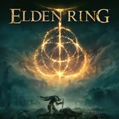
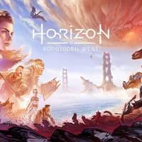

Review: God of War Ragnarok
expande acertos e
torna-se o ápice da franquia
Mais diverso visualmente e em design de jogabilidade, Ragnarok
conta uma história comovente e grandiosa sobre
- ironicamente -temas muito humanos
 Review: Elden Ring é jornada inesquecível por um
É muito comum pensarmos nos jogos da FromSoftware
Review: Elden Ring é jornada inesquecível por um
mundo fascinante
É muito comum pensarmos nos jogos da FromSoftware
de maneiras extremas.
Amo. Odeio. É incrível. É insuportável.
Elden Ring renova essa dualidade.
 Review: Horizon Forbidden West traz aventura maior,
Aloy retorna em game que expande fórmula de sucesso de Zero Dawn.
Review: Horizon Forbidden West traz aventura maior,
melhor e mais emocionante
Aloy retorna em game que expande fórmula de sucesso de Zero Dawn.
Porem, mais refinado em vários aspectos.